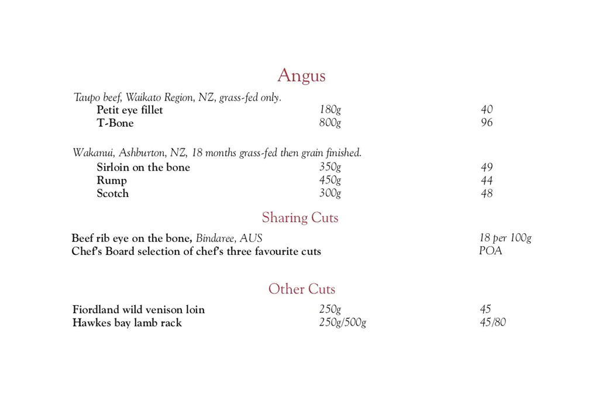
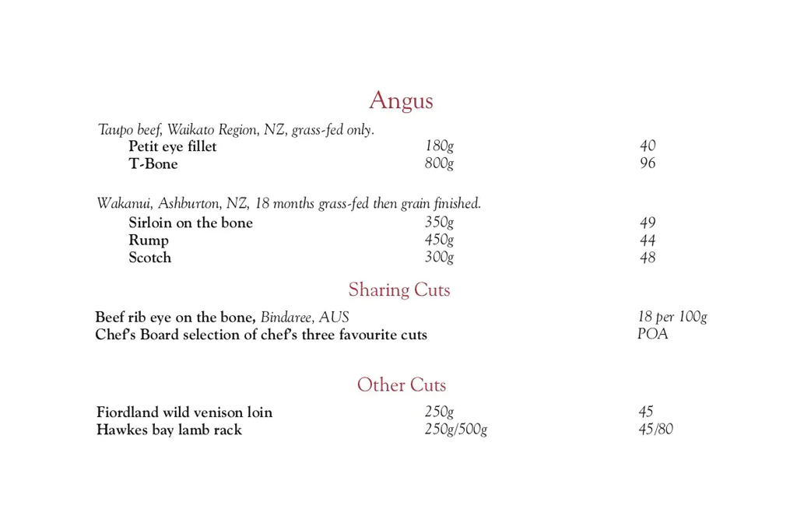

Viaduct Steakhouse
American-style steak and grill
Viaduct Steakhouse is an authentic and premium steak house, and makes no apologies for unashamedly celebrating a love of meat.
The menu showcases a veritable who’s who of meats in all forms, sourced from the very best beef and lamb producers. Quality beef is carefully selected from the highest pedigree and defined by breed and feed.
You will find dishes like the Signature Prime Rib, selected from the finest 150-day grain fed Black Angus that has been dry aged then patiently roasted in their special oven. Or the Jervois cut eye fillet on the bone, farmed on the West Coast, which gives this animal an unmatched tenderness and flavour that can only come from cattle fed on New Zealand’s magnificent grasslands.
Whichever cut or breed you choose, you are then faced with deciding which amazing sauces will accompany your meal. The choices are all delicious and yours to make.
True to the great steak houses of the United States, Viaduct Steakhouse is not solely about red meat. World famous Red King Crab, Oysters, Calamari, daily chicken and fish specials, all take their place on the menu.
 

It’s not just the menu that delivers style and authenticity, exposed distressed timber and brick leave you cocooned in an earthy warmth that screams hearty food and rewarding big flavours.
There are good steak houses, then there are great steak houses and then there’s Viaduct Steakhouse.
Viaduct Steakhouse
70-72 Jervois Road
Ponsonby, Auckland 1011
Phone: 09 376 2049